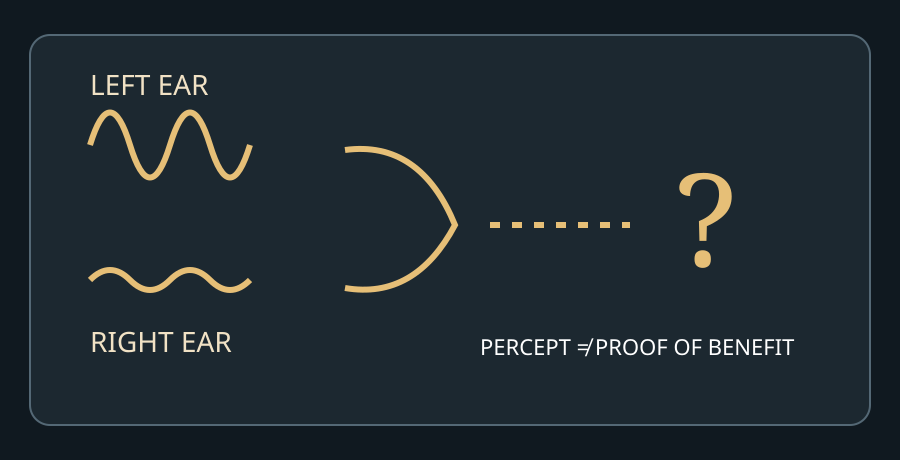

Independent buyer guide · Editorial / commerce separation · Draft
Before you pay to meditate for twelve minutes, learn what the audio actually does.
If you've tried to sit in silence and spent the whole time thinking about tomorrow, you're not shopping for a miraculous brain. You're looking for a way to begin — with less deciding, less friction and a routine that fits your day.
In 1973, Gerald Oster explained why two tones delivered separately to the ears can produce a perceived rhythmic beat. That's a genuine sound-perception phenomenon. Yet hearing a beat does not demonstrate that a purchased recording can give you the benefits of an hour of meditation. A 2023 systematic review found inconsistent evidence of the proposed EEG entrainment mechanism across fourteen studies. The 2024 stress-management review found some promising findings, but insufficient justification for broad recommendation. Neither review tested Zen12 Premium itself.
Two tones. Three claims. One buyer decision.

Read full 42-second narration transcript and proposed captions
Two different tones can make your hearing system perceive a beat that neither channel contains. That's fascinating. But it doesn't mean your brain has entered a promised state. Researchers reviewing fourteen EEG experiments found conflicting results. And evidence from general audio trials doesn't establish what any one branded recording can do. So before you buy a meditation soundtrack, separate what's in the package from the outcome someone says it guarantees. You can begin with a free twelve-minute routine. Then decide whether a structured audio library is worth considering.
Proposed timed captions: ./R388_FILM_CAPTIONS.vtt. Captions require validation against final recorded narration before release.
What Zen12 actually offers
According to the seller's publicly accessible page, Zen12 Premium is a structured audio library: twelve sequential levels, four styles per level (guided meditation, relaxation music, nature sounds and white noise), giving 48 MP3 recordings. The seller also describes downloadable guides, support materials and a one-year refund promise. These are reported as seller-described features and terms, not a Final Vestige product trial or guarantee.
The attractive part of this format is specific and ordinary: a menu of short tracks and a repeatable listening ritual may appeal to someone who prefers guided structure over an open-ended silent session. Whether that appeal translates into better attention, measurable relaxation or a reliable health benefit has not been established for this package by an independent product-specific trial available to us.
Try the free baseline before spending anything
Choose a task you have postponed. Write one sentence naming the first five-minute step. Take two minutes to settle, work for seven minutes without swapping tasks, then spend three minutes noting what you completed and how often you redirected yourself. This is a personal observation, not a clinical test of attention and not proof of a mechanism.
Prefer a guided worksheet? The established free Seven Day Focus Fieldbook has 52 pages, daily routines, a thirty-day log and questions for evaluating meditation-audio claims. It uses Final Vestige's existing Jetpack signup; no new form is presented here.
Five things to check before buying
- Outcome versus format. Forty-eight downloadable files are a package feature; promises of enhanced cognition or treatment are different kinds of claims and need independent proof.
- What will I actually listen to? Confirm that your preferred style and device support the offered files; ask about headphones and any usage guidance.
- Will a free routine do enough? Compare one week of structured silence or ordinary ambient audio before assuming a paid sound mechanism is essential.
- What is the final payable amount? Seller page displays have differed across retrievals. We have not validated the final referred checkout, currency, taxes or upsells; do not rely on a historical banner price.
- How do refunds work in reality? The seller advertises a one-year money-back guarantee for Premium, but we have not tested merchant processing or independently reviewed a completed refund. Read the current terms at checkout.
Claims we won't borrow from the sales page
We do not endorse “an hour in twelve minutes,” automatic EEG control, guaranteed relief from anxiety, a health outcome, heightened intelligence, or a promise that any listener will achieve deep meditation. We do not say that Final Vestige used or reviewed the paid files. The general literature about meditation or binaural beats cannot substitute for evidence about this exact product and outcome.
Commercial readiness: on hold
Consider the Zen12 Premium package — only after the evidence and partner checks clear
A structured twelve-level audio library may fit readers who value guided choice and repeatable short sessions. A Final Vestige earning link will be offered only after named partner acceptance, promotional-channel permissions, an issued URL, product terms and the release decision are verified.
Commercial disclosure: If Final Vestige later becomes an approved affiliate and you buy through an authorized link, Final Vestige may earn a commission at no extra cost to you. No earning link is active on this draft.
Disabled by design. This is not a checkout, outbound click, lead, or paid sale. You can still read all sources and use the free fieldbook.
Check the sources yourself
Start with Oster's 1973 account, the 2023 EEG systematic review and the 2024 non-clinical stress review. For a parallel cautionary tale about observation versus historical explanation, see Puységur's Animal Magnetism Files. For the full investigation read The Beat That Wasn't in the Room (source-controlled manuscript; not a live route).
Product feature statements source: official Zen12 seller page consulted Nov 14, 2026. Original editorial concept; independent research review. No seller URL or affiliate destination is active within this preview. Educational information, not medical advice.